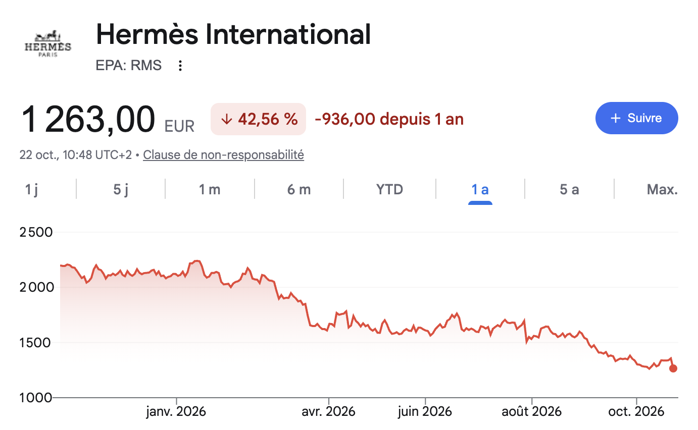

<!doctype html>
<html lang="fr" data-resolution="portrait">
  <head>
    <meta charset="UTF-8" />
    <meta name="viewport" content="width=1080, height=1920" />
    <script src="assets/gsap.min.js"></script>
    <script src="assets/vo-words.js"></script>
    <script src="assets/rms.js"></script>
    <style>
      /* Style « financedata » (styles/financedata/STYLE.md), reel Hermès : une idée par écran,
         coupes franches, chaque élément dans sa zone (250 → 1290 px), sous-titres à 1330 px. */
      @font-face { font-family: "Inter FD"; src: url("assets/fonts/inter-latin-600-normal.woff2"); font-weight: 600; }
      @font-face { font-family: "Inter FD"; src: url("assets/fonts/inter-latin-800-normal.woff2"); font-weight: 800; }
      @font-face { font-family: "Grotesk"; src: url("assets/fonts/schibsted-grotesk-latin-500-normal.woff2"); font-weight: 500; }
      @font-face { font-family: "Grotesk"; src: url("assets/fonts/schibsted-grotesk-latin-600-normal.woff2"); font-weight: 600; }
      @font-face { font-family: "Grotesk"; src: url("assets/fonts/schibsted-grotesk-latin-700-normal.woff2"); font-weight: 700; }
      * { margin: 0; padding: 0; box-sizing: border-box; }
      html, body { width: 1080px; height: 1920px; overflow: hidden; background: #000; }
      #root { position: relative; width: 1080px; height: 1920px; overflow: hidden; font-family: "Inter FD", sans-serif; }
      .sc { position: absolute; inset: 0; opacity: 0; overflow: hidden; }
      .white { background: radial-gradient(ellipse 80% 62% at 50% 45%, #f4f2f5 0%, #edebee 45%, #a9a7aa 82%, #5d5b5e 100%); }
      .navy { background: radial-gradient(ellipse 75% 60% at 50% 45%, #1a2275 0%, #14196d 40%, #0d1250 75%, #0a0e3b 100%); }
      .black { background: radial-gradient(ellipse 70% 55% at 50% 45%, #1a1a1d 0%, #0b0b0d 70%, #000 100%); }
      .t { position: absolute; left: 0; right: 0; text-align: center; white-space: nowrap; }
      .tl { position: absolute; white-space: nowrap; }
      /* police secondaire (graphiques, chiffres, illustrations) : Schibsted Grotesk ; Inter 800 reste pour titres et sous-titres */
      .big { font-family: "Grotesk", sans-serif; font-weight: 600; letter-spacing: -.035em; word-spacing: .04em; line-height: .95; font-feature-settings: "tnum" 1; }
      .small { font-family: "Grotesk", sans-serif; font-weight: 500; font-size: 42px; letter-spacing: -.01em; }
      .lab { font-family: "Grotesk", sans-serif; font-weight: 600; font-size: 46px; letter-spacing: -.02em; }
      /* titres : typographie seule + filet d'accent (aucun encadré) */
      .kw { position: absolute; display: inline-block; font-weight: 800; letter-spacing: -.04em; line-height: 1.05; padding: 0 0 26px; white-space: nowrap; z-index: 3; text-align: center; }
      .kw .bx { position: absolute; left: 50%; bottom: 0; width: 80px; height: 5px; margin-left: -40px; transform-origin: 50% 50%; background: #3d5afe; }
      .kw .tx { position: relative; color: #0a105e; }
      .kw.ondark .tx { color: #fff; } .kw.ondark .bx { background: rgba(255,255,255,.55); }
      .kw.red .tx { color: #ff2e24; } .kw.red .bx { background: #ff2e24; }
      .box { position: absolute; }
      .bond { position: absolute; width: 420px; height: 250px; border: 4px solid #0a105e; background: #fff; box-shadow: 0 20px 40px rgba(10,16,94,.25); text-align: center; }
      .bond .h { font-weight: 600; font-size: 34px; line-height: 1; color: #4a4e5c; margin-top: 36px; letter-spacing: -.02em; }
      .bond .v { font-weight: 800; font-size: 120px; color: #0a105e; letter-spacing: -.05em; word-spacing: .12em; line-height: 1; margin-top: 22px; }
      /* cartes : panneaux sans bordure (ombre douce sur blanc, verre dépoli sur bleu) */
      .card2 { position: absolute; background: #fff; box-shadow: 0 1px 0 rgba(10,16,94,.06), 0 30px 80px rgba(10,16,94,.14); padding: 40px 44px; }
      .card2 .lb { font-family: "Grotesk", sans-serif; font-weight: 500; font-size: 24px; letter-spacing: .14em; text-transform: uppercase; color: #7a7e8c; line-height: 1; }
      .card2 .vl { font-family: "Grotesk", sans-serif; font-weight: 600; font-size: 96px; letter-spacing: -.035em; word-spacing: .04em; color: #0a105e; line-height: 1; margin-top: 44px; white-space: nowrap; }
      .card2.glass { background: linear-gradient(180deg, rgba(255,255,255,.10), rgba(255,255,255,.04)); box-shadow: inset 0 0 0 1px rgba(255,255,255,.14), 0 30px 80px rgba(0,0,0,.25); }
      .card2.glass .lb { color: rgba(255,255,255,.6); } .card2.glass .vl { color: #fff; }
      .card2.dim { opacity: .5; }
      .card2.hi.glass { box-shadow: inset 0 0 0 1px rgba(255,255,255,.45), 0 30px 80px rgba(0,0,0,.3); }
      .card2.green { box-shadow: inset 0 4px 0 #08923a, 0 30px 80px rgba(10,16,94,.14); } .card2.green .vl { color: #08923a; }
      .card2.green.glass { box-shadow: inset 0 4px 0 #3cff5a, inset 0 0 0 1px rgba(60,255,90,.35), 0 0 60px rgba(60,255,90,.18); } .card2.green.glass .vl { color: #3cff5a; }
      svg { position: absolute; overflow: visible; }
      #caps { position: absolute; left: 0; right: 0; top: 1330px; z-index: 20; }
      .cl { position: absolute; left: 0; right: 0; text-align: center; opacity: 0; }
      .cl span { display: inline-block; padding: 8px 22px 13px; border-radius: 4px; background: rgba(30,34,42,.74); font-weight: 600; font-size: 54px; letter-spacing: -.045em; word-spacing: .06em; color: #fff; white-space: nowrap; }
    </style>
  </head>
  <body>
    <div id="root" data-composition-id="main" data-start="0" data-duration="48.2" data-width="1080" data-height="1920">
      <audio id="vo" src="assets/voix.mp3" data-start="0" data-duration="48.2" data-track-index="1"></audio>
      <div id="stage" class="clip" data-start="0" data-duration="48.2" data-track-index="0" style="position:absolute; inset:0"></div>
    </div>

    <script>
      (function () {
        var NS = "http://www.w3.org/2000/svg", tl = gsap.timeline({ paused: true }), stage = document.getElementById("stage");
        var W = window.VO.words, toCenter = [];
        var NAVY = "#0a105e", GREEN = "#08923a", GLOW = "#3cff5a", RED = "#ff2e24", GREY = "#4a4e5c";
        function at(word, after) { after = after || 0; for (var i = 0; i < W.length; i++) if (W[i].s >= after && W[i].w.replace(/[.,?]$/, "") === word) return W[i].s; throw new Error("mot introuvable : " + word + " après " + after); }
        function div(parent, cls, html, style) { var d = document.createElement("div"); d.className = cls; if (html != null) d.innerHTML = html; if (style) d.setAttribute("style", style); parent.appendChild(d); return d; }
        function svgIn(sc, w, h, left, top) { var s = document.createElementNS(NS, "svg"); s.setAttribute("width", w); s.setAttribute("height", h); s.style.left = left + "px"; s.style.top = top + "px"; sc.appendChild(s); return s; }
        function el(svg, tag, attrs) { var e = document.createElementNS(NS, tag); for (var k in attrs) e.setAttribute(k, attrs[k]); svg.appendChild(e); return e; }
        function path(svg, d, stroke, sw) { var p = el(svg, "path", { d: d, fill: "none", stroke: stroke, "stroke-width": sw, "stroke-linejoin": "round", "stroke-linecap": "round" }); var L = p.getTotalLength(); p.style.strokeDasharray = L + " " + L; p.style.strokeDashoffset = L; return p; }
        function draw(p, t, dur) { tl.to(p, { strokeDashoffset: 0, duration: dur || 0.5, ease: "power2.inOut" }, t); }
        function fade(n, t, from) { tl.fromTo(n, from || { opacity: 0, y: 20 }, { opacity: 1, y: 0, x: 0, scale: 1, duration: 0.3, ease: "power3.out" }, t); return n; }

        function kw(sc, text, t, top, size, tone) {
          var dark = /navy|black/.test(sc.className);
          var k = div(sc, "kw " + (tone === "red" ? "red" : dark ? "ondark" : ""), '<span class="bx"></span><span class="tx">' + text + "</span>", "top:" + top + "px; font-size:" + (size || 96) + "px");
          toCenter.push(k);
          tl.fromTo(k.querySelector(".tx"), { opacity: 0, y: 18, clipPath: "inset(0 0 100% 0)" }, { opacity: 1, y: 0, clipPath: "inset(0 0 -20% 0)", duration: 0.4, ease: "power3.out" }, t);
          tl.fromTo(k.querySelector(".bx"), { scaleX: 0 }, { scaleX: 1, duration: 0.4, ease: "power3.out" }, t + 0.12);
          return k;
        }
        function big(sc, text, t, top, size, color, glow) {
          var b = div(sc, "t big", text, "top:" + top + "px; font-size:" + size + "px; color:" + color + (glow ? "; text-shadow: 0 0 40px " + glow : ""));
          tl.fromTo(b, { opacity: 0, x: 140, filter: "blur(18px)" }, { opacity: 1, x: 0, filter: "blur(0px)", duration: 0.35, ease: "power3.out" }, t);
          return b;
        }
        function small(sc, text, t, top, color, size) {
          var s = div(sc, "t small", text, "top:" + top + "px; color:" + color + (size ? "; font-size:" + size + "px; font-weight:800" : ""));
          return fade(s, t, { opacity: 0, y: 16 });
        }
        // vraie photo plein écran (push lent ≤ 3,5 %, voile marine pour la lisibilité)
        function photoScene(a, b, src, pos, dark) {
          var sc = scene(a, b, "black");
          var im = div(sc, "", '');
          tl.fromTo(im.firstChild, { scale: 1 }, { scale: 1.035, duration: b - a, ease: "none" }, a);
          div(sc, "box", null, "inset:0; background: linear-gradient(180deg, rgba(5,8,40,.62) 0%, rgba(5,8,40,.22) 38%, rgba(5,8,40,.22) 62%, rgba(5,8,40,.66) 100%)");
          if (dark) div(sc, "box", null, "inset:0; background: rgba(5,8,40," + dark + ")");
          return sc;
        }
        function scene(a, b, bg) {
          var sc = div(stage, "sc " + (bg || ""));
          tl.set(sc, { opacity: 1 }, a); tl.set(sc, { opacity: 0 }, b);
          return sc;
        }
        // flèche dessinée (trait + pointe)
        function arrow(svg, x1, y1, x2, y2, color, t, sw) {
          var p = path(svg, "M" + x1 + " " + y1 + " L" + x2 + " " + y2, color, sw || 8);
          var a = Math.atan2(y2 - y1, x2 - x1), s = 30;
          var hd = el(svg, "path", { d: "M" + (x2 - s * Math.cos(a - 0.5)) + " " + (y2 - s * Math.sin(a - 0.5)) + " L" + x2 + " " + y2 + " L" + (x2 - s * Math.cos(a + 0.5)) + " " + (y2 - s * Math.sin(a + 0.5)), fill: "none", stroke: color, "stroke-width": sw || 8, "stroke-linejoin": "round", "stroke-linecap": "round", opacity: 0 });
          draw(p, t, 0.45); tl.to(hd, { opacity: 1, duration: 0.1 }, t + 0.4);
          return p;
        }
        // pièce « € »
        function coin(sc, x, y, r, color) {
          return div(sc, "box", "€", "left:" + (x - r) + "px; top:" + (y - r) + "px; width:" + 2 * r + "px; height:" + 2 * r + "px; border-radius:50%; background:" + (color || "#f2c230") + "; color:" + NAVY + "; font-weight:800; font-size:" + r + "px; line-height:" + 2 * r + "px; text-align:center; box-shadow: 0 8px 20px rgba(0,0,0,.25)");
        }
        // carré « bâtiment » simple (banque)
        function bank(svg, cx, top, color, t) {
          var parts = [
            path(svg, "M" + (cx - 230) + " " + (top + 150) + " L" + cx + " " + top + " L" + (cx + 230) + " " + (top + 150) + " Z", color, 12),
            path(svg, "M" + (cx - 250) + " " + (top + 440) + " L" + (cx + 250) + " " + (top + 440), color, 14)
          ];
          [-150, -50, 50, 150].forEach(function (dx) { parts.push(path(svg, "M" + (cx + dx) + " " + (top + 190) + " L" + (cx + dx) + " " + (top + 400), color, 26)); });
          parts.forEach(function (p, i) { draw(p, t + i * 0.06, 0.4); });
        }

        // =================== MONTAGE ===================
        // Déroulé de la v1 (barres, fiche, flux, nuage risque/rendement, taux/prix, 4 % vs 6 %) en DA FinanceData.
        var s, g, i;
        function txt(svg, x, y, str, size, fill, weight, anchor) { var t = el(svg, "text", { x: x, y: y, "font-family": "Grotesk", "font-weight": weight === 800 ? 600 : weight || 600, "font-size": size, fill: fill, "text-anchor": anchor || "middle" }); t.textContent = str; return t; }
        function count(node, t, from, to, dur, suffix) {
          var o = { v: from };
          tl.fromTo(o, { v: from }, { v: to, duration: dur, ease: "power2.out", onUpdate: function () { node.textContent = Math.round(o.v).toLocaleString("fr-FR").replace(/ | /g, " ") + (suffix || ""); } }, t);
        }
        // carte (étiquette + valeur)
        function cardBox(sc, left, top, w, h, label, value, tone) {
          var c = div(sc, "card2 " + (tone || "") + (/navy/.test(sc.className) ? " glass" : ""), '<div class="lb">' + label + '</div><div class="vl">' + value + "</div>", "left:" + left + "px; top:" + top + "px; width:" + w + "px; height:" + h + "px");
          if (value.length > 8) c.querySelector(".vl").style.fontSize = "70px";
          return c;
        }

        // ---- grille fixe : un titre (y 300) + un visuel centré (y 480 → 1180), rien d'autre ----
        var R = window.RMS;
        function tx(d) { return +d.slice(0, 4) + ((+d.slice(5, 7)) - 1) / 12 + ((+d.slice(8, 10)) - 1) / 365; }
        function chartIn(g, from, x0, x1, y0, y1, vmin, vmax) {
          var rows = R.filter(function (r) { return r[0] >= from; });
          var t0 = tx(rows[0][0]), t1 = tx(rows[rows.length - 1][0]);
          function X(t) { return x0 + (t - t0) / (t1 - t0) * (x1 - x0); }
          function Y(v) { return y1 - (v - vmin) / (vmax - vmin) * (y1 - y0); }
          function seg(a, b) { return rows.filter(function (r) { return r[0] >= a && r[0] <= b; }).map(function (r, i) { return (i ? "L" : "M") + X(tx(r[0])).toFixed(1) + " " + Y(r[1]).toFixed(1); }).join(" "); }
          return { X: X, Y: Y, seg: seg };
        }
        var PEAK = ["2025-02-14", 2839], LAST = R[R.length - 1];
        function title(sc, text, t, tone) { return kw(sc, text, t, 300, 80, tone); }
        // grand graphique du cours 2018 → aujourd'hui (même place à chaque fois)
        function bigChart(sc, tUp, tDown, upInstant) {
          var g = svgIn(sc, 1080, 760, 0, 470);
          var c = chartIn(g, "2018-01-01", 110, 970, 40, 640, 0, 3000);
          el(g, "line", { x1: 110, x2: 970, y1: 640, y2: 640, stroke: "rgba(10,16,94,.22)", "stroke-width": 2 });
          txt(g, 110, 690, "2018", 30, GREY, 500, "start"); txt(g, 970, 690, "2026", 30, GREY, 500, "end");
          var up = path(g, c.seg("2018-01-01", PEAK[0]), NAVY, 5);
          if (upInstant) up.style.strokeDashoffset = 0; else draw(up, tUp, 2.0);
          if (tDown != null) { var dn = path(g, c.seg(PEAK[0], "2030-01-01"), RED, 5); draw(dn, tDown, 1.3); }
          return { g: g, c: c };
        }

        // A. 0–3,8 hook : capture du cours (Google Finance, 22/10) animée — la courbe se dévoile de gauche à droite
        s = scene(0, 3.82, "white");
        var shot = div(s, "box", '', "left:40px; top:500px; width:1000px; background:#fff; box-shadow: 0 1px 0 rgba(10,16,94,.06), 0 40px 90px rgba(10,16,94,.14)");
        var mask = div(shot, "box", null, "left:78px; top:300px; width:905px; height:280px; background:#fff; transform-origin:100% 50%");
        tl.fromTo(shot, { opacity: 0, y: 24 }, { opacity: 1, y: 0, duration: 0.35, ease: "power3.out" }, 0.0);
        tl.fromTo(mask, { scaleX: 1 }, { scaleX: 0, duration: 2.0, ease: "power2.inOut" }, 0.3);
        tl.fromTo(shot, { scale: 1 }, { scale: 1.03, duration: 3.82, ease: "none" }, 0);

        // B. 3,8–6,2 l'intouchable du luxe
        s = scene(3.82, 6.18, "white");
        title(s, "L'intouchable du luxe", 3.7);
        bigChart(s, 3.75, null);

        // C. 6,2–9,45 le Birkin
        s = photoScene(6.18, 9.45, "birkin.jpg", "50% 50%");
        title(s, "Le Birkin", 6.05, "light");

        // D. 9,45–12,3 depuis 2025
        s = scene(9.45, 12.3, "white");
        title(s, "Depuis 2025", 9.3);
        bigChart(s, 0, at("machine") - 0.3, true);

        // E1. 12,3–13,55 trois raisons
        s = scene(12.3, 13.55, "navy");
        kw(s, "3 raisons", 12.15, 820, 130, "light");

        // E2. 13,55–18,3 1. la croissance ralentit
        s = scene(13.55, 18.3, "white");
        title(s, "1. La croissance ralentit", 13.45);
        g = svgIn(s, 1080, 700, 0, 470);
        el(g, "line", { x1: 180, x2: 900, y1: 600, y2: 600, stroke: "rgba(10,16,94,.22)", "stroke-width": 2 });
        var bq2 = el(g, "rect", { x: 270, y: 600 - 67 * 6.4, width: 160, height: 67 * 6.4, fill: NAVY });
        var bq3 = el(g, "rect", { x: 650, y: 600 - 43 * 6.4, width: 160, height: 43 * 6.4, fill: "#9aa0b5" });
        tl.fromTo(bq2, { scaleY: 0, transformOrigin: "50% 100%" }, { scaleY: 1, duration: 0.5, ease: "power3.out" }, 13.6);
        tl.fromTo(bq3, { scaleY: 0, transformOrigin: "50% 100%" }, { scaleY: 1, duration: 0.5, ease: "power3.out" }, at("croissance", 15) - 0.1);
        txt(g, 350, 600 - 67 * 6.4 - 26, "6,7 %", 58, NAVY, 600);
        var v3 = txt(g, 730, 600 - 43 * 6.4 - 26, "4,3 %", 58, "#5b5f70", 600);
        txt(g, 350, 655, "T2", 34, GREY, 500); var q3l = txt(g, 730, 655, "T3", 34, GREY, 500);
        tl.fromTo([v3, q3l], { opacity: 0 }, { opacity: 1, duration: 0.2 }, at("croissance", 15) + 0.2);

        // E3. 18,3–20,95 ce jeudi : encore décevant
        s = scene(18.3, 20.95, "navy");
        title(s, "Ce jeudi", 18.2, "light");
        big(s, "Décevant", 18.45, 760, 170, "#ff6b5e");

        // F1. 20,95–23,85 2. la Chine
        s = photoScene(20.95, 23.85, "shanghai.jpg", "50% 50%");
        title(s, "2. La Chine ralentit", 20.85, "light");

        // F2. 23,85–26,45 + le Moyen-Orient
        s = photoScene(23.85, 26.45, "dubai-mall.jpg", "50% 50%");
        title(s, "+ le Moyen-Orient", 23.75, "light");

        // G. 26,45–31,55 3. le prix
        s = scene(26.45, 31.55, "white");
        title(s, "3. Le prix", 26.35);
        big(s, "65×", at("prix", 27) - 0.1, 640, 300, NAVY);
        small(s, "ses bénéfices, au plus haut", at("prix", 27) + 0.25, 960, GREY, 44);

        // H. 31,55–34,8 résultat : −57 % (même graphique que « Depuis 2025 », le titre devient le chiffre)
        s = scene(31.55, 34.8, "white");
        var tRes = title(s, "Résultat", 31.45);
        tl.to(tRes, { opacity: 0, duration: 0.15 }, at("cinquante-sept") - 0.3);
        var h57 = big(s, "−57 %", at("cinquante-sept") - 0.15, 255, 150, RED);
        var bc = bigChart(s, 0, null, true);
        el(bc.g, "path", { d: bc.c.seg(PEAK[0], "2030-01-01"), fill: "none", stroke: RED, "stroke-width": 5, "stroke-linejoin": "round" });
        var pd = el(bc.g, "circle", { cx: bc.c.X(tx(PEAK[0])), cy: bc.c.Y(PEAK[1]), r: 12, fill: NAVY });
        var ld = el(bc.g, "circle", { cx: bc.c.X(tx(LAST[0])), cy: bc.c.Y(LAST[1]), r: 12, fill: RED });
        tl.fromTo([pd, ld], { opacity: 0 }, { opacity: 1, duration: 0.25 }, at("cinquante-sept") - 0.1);

        // I. 34,8–40,3 la valorisation : 65× → 30×
        s = scene(34.8, 40.3, "navy");
        title(s, "Sa valorisation", 34.7, "light");
        g = svgIn(s, 1080, 600, 0, 520);
        var bH = el(g, "rect", { x: 300, y: 80, width: 600, height: 110, fill: "rgba(255,255,255,.22)" });
        var bN = el(g, "rect", { x: 300, y: 300, width: 600 * 30 / 65, height: 110, fill: "#ffffff" });
        txt(g, 270, 150, "Au plus haut", 40, "#9aa3d6", 500, "end"); txt(g, 270, 370, "Aujourd'hui", 40, "#ffffff", 600, "end");
        var tH = txt(g, 876, 153, "65×", 58, "#ffffff", 600, "end"), tN = txt(g, 300 + 600 * 30 / 65 + 26, 374, "30×", 58, "#ffffff", 600, "start");
        tl.fromTo(bH, { scaleX: 0, transformOrigin: "0% 50%" }, { scaleX: 1, duration: 0.5, ease: "power3.out" }, 34.85);
        tl.fromTo(tH, { opacity: 0 }, { opacity: 1, duration: 0.2 }, 35.15);
        tl.fromTo(bN, { scaleX: 0, transformOrigin: "0% 50%" }, { scaleX: 1, duration: 0.5, ease: "power3.out" }, at("trente") - 0.1);
        tl.fromTo(tN, { opacity: 0 }, { opacity: 1, duration: 0.2 }, at("trente") + 0.2);

        // J. 40,3–45,6 la leçon
        s = photoScene(40.3, 45.62, "hermes-george-v.jpg", "50% 50%");
        title(s, "Le prix compte", 40.2, "light");

        // K. 45,6–fin : profil Instagram, bouton calé sur « abonnez-vous »
        s = scene(45.62, 48.2, "navy");
        var av = div(s, "box", '<svg viewBox="0 0 360 360" style="position:absolute; inset:0; width:100%; height:100%; overflow:visible"><defs><linearGradient id="gStory" x1="0" y1="1" x2="1" y2="0"><stop offset="0" stop-color="#feda75"/><stop offset="0.3" stop-color="#fa7e1e"/><stop offset="0.6" stop-color="#d62976"/><stop offset="1" stop-color="#962fbf"/></linearGradient></defs></svg><div class="pic" style="position:absolute; left:22px; top:22px; width:316px; height:316px; border-radius:50%; overflow:hidden; border:8px solid #0d1250; box-shadow:0 20px 50px rgba(0,5,25,.5)"></div>', "left:360px; top:430px; width:360px; height:360px");
        var ring = el(av.querySelector("svg"), "circle", { cx: 180, cy: 180, r: 170, fill: "none", stroke: "url(#gStory)", "stroke-width": 12, transform: "rotate(-90 180 180)" });
        var RL = 2 * Math.PI * 170; ring.style.strokeDasharray = RL + " " + RL; ring.style.strokeDashoffset = RL;
        tl.fromTo(av.querySelector(".pic"), { opacity: 0, scale: 0.8 }, { opacity: 1, scale: 1, duration: 0.45, ease: "power3.out" }, 45.3);
        tl.to(ring, { strokeDashoffset: 0, duration: 0.8, ease: "power2.inOut" }, 45.62);
        var nm = div(s, "t", "FinanceData", "top:840px; font-weight:800; font-size:72px; letter-spacing:-.04em; color:#fff");
        fade(nm, 45.5);
        var tA = at("abonnez-vous");
        var btn = div(s, "box", '<span class="t1" style="position:absolute; inset:0">S\'abonner</span><span class="t2" style="position:absolute; inset:0; opacity:0">Abonné ✓</span>', "left:340px; top:960px; width:400px; height:100px; border-radius:8px; background:#0095f6; color:#fff; font-family:Grotesk; font-weight:600; font-size:42px; text-align:center; line-height:100px; box-shadow:0 18px 40px rgba(0,60,140,.4)");
        tl.fromTo(btn, { opacity: 0, y: 24 }, { opacity: 1, y: 0, duration: 0.4, ease: "power3.out" }, tA - 1.0);
        tl.to(btn, { scale: 0.94, duration: 0.1, ease: "power1.in" }, tA + 0.08);
        tl.to(btn, { scale: 1, duration: 0.2, ease: "back.out(2)" }, tA + 0.18);
        tl.to(btn, { backgroundColor: "#363a45", boxShadow: "0 18px 40px rgba(0,0,0,.35)", duration: 0.25 }, tA + 0.12);
        tl.set(btn.querySelector(".t1"), { opacity: 0 }, tA + 0.18); tl.set(btn.querySelector(".t2"), { opacity: 1 }, tA + 0.18);

        // =================== SOUS-TITRES (3 mots max) ===================
        var NUM = [[1.26, 1.58, "5 %"], [33.18, 33.76, "57 %"], [36.26, 36.26, "30"], [37.56, 37.56, "65"], [39.76, 39.76, "7"]];
        // corrections de transcription : [mot, début min, début max, texte affiché]
        var FIX = [["Hermès", 4.6, 4.8, "Hermès,"], ["était", 5.0, 5.2, "c'était"], ["ces", 18.5, 19.5, "ses"], ["cher", 28.0, 28.5, "chère"], ["bourse", 28.3, 28.9, "Bourse"], ["bourse", 44.9, 45.5, "Bourse."]];
        W.forEach(function (w) { FIX.forEach(function (f) { if (w.w.replace(/[.,]$/, "") === f[0] && w.s >= f[1] && w.s <= f[2]) w.w = f[3]; }); });
        var T = [];
        W.forEach(function (w) {
          if (w.w === "?") { T[T.length - 1].w += " ?"; T[T.length - 1].e = w.e; return; }
          var n = NUM.filter(function (r) { return w.s >= r[0] - 0.01 && w.s <= r[1]; })[0];
          if (n) { if (!n.done) { n.done = 1; T.push({ w: n[2], s: w.s, e: w.e }); } else T[T.length - 1].e = w.e; }
          else T.push({ w: w.w, s: w.s, e: w.e });
        });
        var box = div(stage, "", null); box.id = "caps";
        var gr = [];
        T.forEach(function (w, i) {
          gr.push(w);
          var len = gr.reduce(function (a, x) { return a + x.w.length + 1; }, 0);
          if (/[.,?]$/.test(w.w) || gr.length === 3 || len > 20 || i === T.length - 1) {
            var d = div(box, "cl", "<span>" + gr.map(function (x) { return x.w; }).join(" ") + "</span>");
            var nxt = T[i + 1] ? T[i + 1].s : gr[gr.length - 1].e + 0.3;
            tl.fromTo(d, { opacity: 0, y: 6 }, { opacity: 1, y: 0, duration: 0.1 }, gr[0].s - 0.06);
            tl.to(d, { opacity: 0, duration: 0.01 }, Math.min(nxt - 0.08, gr[gr.length - 1].e + 0.45));
            gr = [];
          }
        });

        toCenter.forEach(function (n) { n.style.left = "540px"; gsap.set(n, { xPercent: -50 }); });
        tl.set({}, {}, 48.2);
        window.__timelines = window.__timelines || {};
        window.__timelines["main"] = tl;
        tl.seek(0);
      })();
    </script>
  </body>
</html>
